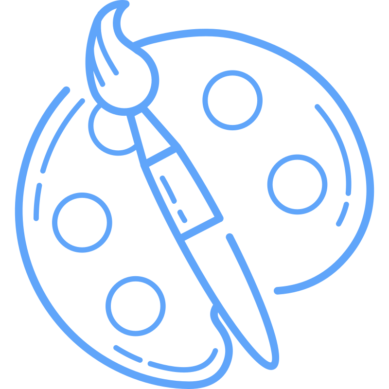
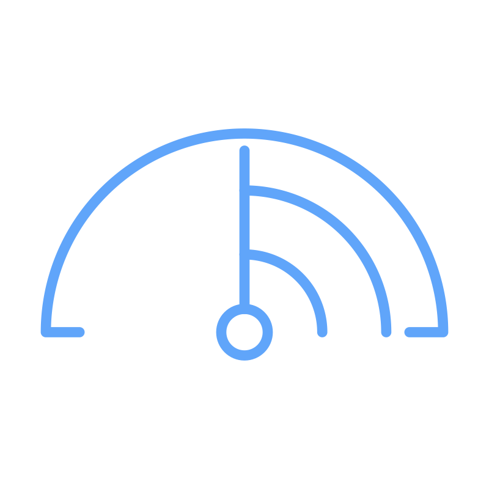
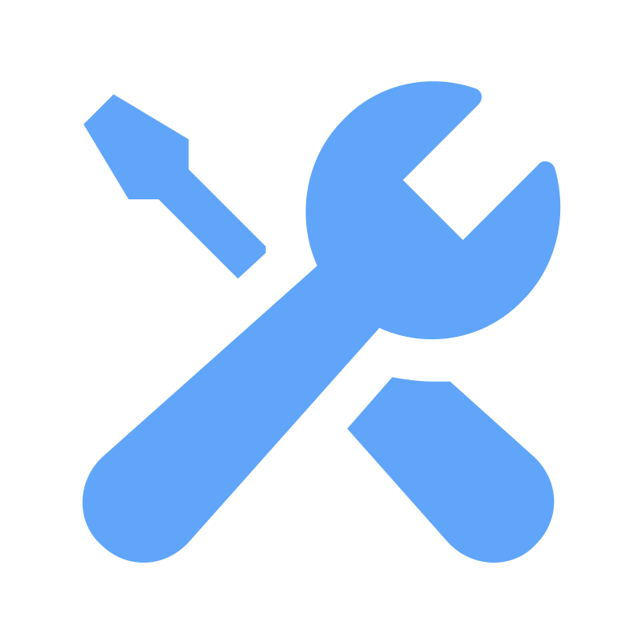

SERVIÇOS
Conheça a ampla variedade de serviços que oferecemosSuporte Técnico
Oferecemos suporte presencial, remoto e via telefone para empresas e clientes, evitando que problemas de informática afetem a produtividade.
Sistemas
Trabalhamos para que você tenha total controle das informações da sua empresa, em qualquer lugar e a qualquer hora, desde o chão de fábrica até a gestão financeira.
Servidores
Contamos com expertise na configuração de diversos tipos de servidores, como de arquivos, internet, e-mail, bancos de dados, terminal server, backup, proxy autenticado e firewall, entre outros.
Desenvolvimento de Sites
Atuamos também na criação e manutenção de sites, oferecendo soluções personalizadas e modernas para que sua presença online seja um diferencial.
Sobre Nós
Comprimisso com a excelência desde 1988Fundada em 1988, a CF Informática construiu sua reputação ao aliar alto padrão de qualidade, atendimento personalizado e constante busca por inovações. Nossa missão é oferecer as soluções mais inteligentes em tecnologia da informação, otimizando os processos produtivos de nossos clientes e integrando serviços de forma ágil e eficiente. Ao longo de nossa trajetória, investimos em desenvolvimento e atualização de softwares, manutenção de hardware, implantação de redes locais, locação de equipamentos e diversas outras frentes de TI. Com isso, nossa equipe se especializou em concentrar todas as demandas de microinformática em uma única empresa, proporcionando praticidade, confiabilidade e tranquilidade para o seu negócio.
37 Anos de Experiência
Qualidade Comprovada
Atendimento Personalizado
DESENVOLVIMENTO DE SITES PROFISSIONAIS
Fortaleça sua presença digital e conquiste mais clientes com um site moderno, seguro e otimizado.Design Responsivo
Seu site em qualquer tela: celular, tablet ou desktop.
Seu site se adapta automaticamente a qualquer tamanho de tela, proporcionando ao usuário uma experiência perfeita em celulares, tablets e desktops. Isso aumenta o engajamento e reduz as chances de abandono, pois o layout permanece organizado e acessível independentemente do dispositivo utilizado.
Personalização Total
Layout e funcionalidades sob medida, refletindo a identidade da sua marca.
Cada projeto é único, com layout, cores e funcionalidades moldados para atender às necessidades do seu negócio. Desde integrações específicas até soluções sob medida, tudo é pensado para refletir sua identidade de marca e garantir a melhor experiência de navegação possível.
Desempenho
Carregamento rápido das páginas.
Sites rápidos geram melhores resultados. Otimizamos scripts, imagens e banco de dados para reduzir o tempo de carregamento e evitar lentidão. Isso não apenas agrada os usuários, mas também contribui para o ranqueamento orgânico nos mecanismos de busca, resultando em mais visitas e conversões.
Suporte e Manutenção
Equipe dedicada para atualizar e evoluir seu site quando necessário.
Após o lançamento do site, nossa equipe acompanha o desempenho e faz ajustes regulares para manter tudo em pleno funcionamento. Oferecemos suporte contínuo, atualizações de segurança e orientações sobre boas práticas, garantindo que você esteja sempre à frente em um ambiente digital em constante evolução.
SEO (Search Engine Optimization)
Otimização para mecanismos de busca.
Aplicamos técnicas para melhorar o posicionamento do seu site no Google e outros buscadores, aumentando a visibilidade e atraindo visitantes qualificados. Com uma estratégia de palavras-chave, estrutura de conteúdo otimizada e ajustes de performance, o seu negócio se destaca frente à concorrência.
NOSSA FORMA DE TRABALHAR
Mais de 30 anos de experiência1. Responsabilidade em primeiro lugar
Tomamos todas as medidas preventivas para eliminar prontamente qualquer inatividade dos sistemas para que sua empresa possa funcionar sem interrupção.
2. O melhor da tecnologia nos negócios
Iremos implementar estratégias e soluções comprovadas para maximizar um maior valor para o seu negócio. Vamos trabalhar com um planejamento objetivo e estabelecer cronogramas para realização de inspeções e manutenções preventivas para ajudar a sua empresa a atingir suas metas comerciais.
3. Visitas periódicas para prevenção e manutenção
Visitas periódicas para prevenção e regularização, mudando e atualizando seus sistemas para facilitar as necessidades da sua empresa, vamos garantir que seus sistemas possam fazer e o que eles estão destinados a fazer.